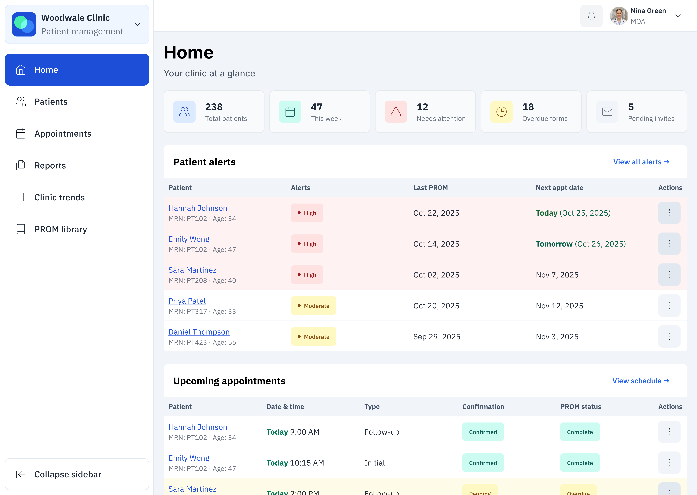
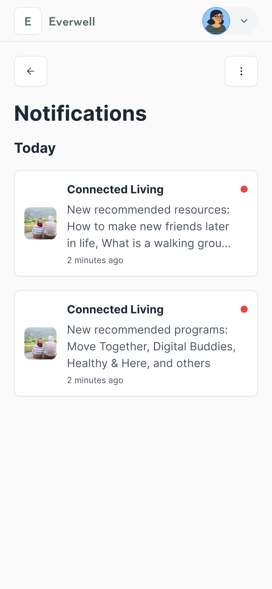
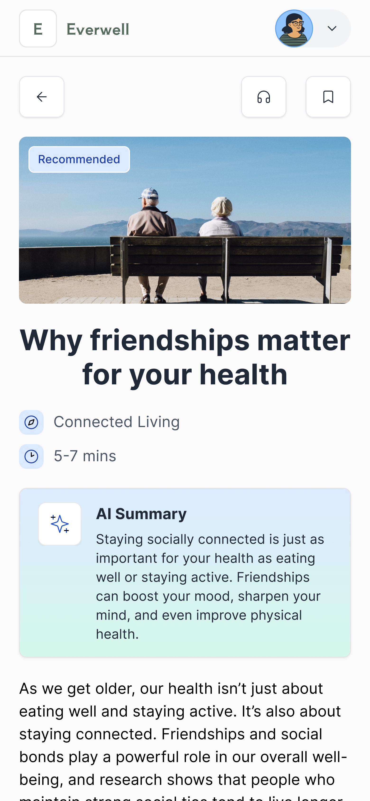

Everwell
Achieving a 98% form compliance and helping clinicians spot trends
Hero mockup for project

Project overview
Everwell developed a digital platform to automate patient-reported data collection and help providers track health trends over time.
Once manual questions were with automated questionnaires and real-time insights, the questionnaire completion rates drastically grew and clinicians were able make faster, more informed decisions and deliver proactive care.
Healthcare providers needed patients to fill out forms.
- Problem
-
Healthcare providers struggled with manual, repetitive tasks and a lack of actionable patient insight.

Key problems
- Providers spend 2-3 hours per day tracking and sending questionnaires
- No clear way to view patient progress over time which leads to missed follow-ups
- High-risk patients could be overlooked due to scattered and incomplete data
The core design challenge: How do we help providers act on real-time patient data?
- Solution
-
My team and I designed an adaptable digital platform that helps healthcare providers save time, reduce errors, and deliver better patient care. We transformed manual workflows into automated programs, visual dashboards, and clear alerts which allow clinicians to spot patient risks and trends at a glance.
Our flexible designs ensure that Everwell can easily support new clinical specialties and future care programs as the organization grows.
- Key contributions
-
During this project, I:
- Designed the Trends feature, translated complex patient data into intuitive charts and visual summaries which made health trends easy for clinicians to spot and act on.
- Led data visualization strategy, during which I developed line and radar charts, smart tooltips, and visual summary cards for actionable insights.
- Advocated for user-centered design, conducting interviews and usability testing with clinicians, MOAs, admin staff, and patients to keep real-world workflows and experiences at the center of every decision.
- Streamlined onboarding for new programs, by developing design patterns that enabled quick adaptation for new clinics and care areas.
- Drove cross-functional collaboration by working closely with design, product, engineering, and clinical teams to validate features and ensure that the project stayed on track.
- Key impact
-
With the new PROM workflows and visualization, clinicians could spot high-risk patients and overdue forms in a glance while patients received clear and approachable tasks.
This shift directly boosted engagement, achieving a 98% patient completion rate (up from 20% with paper forms) and helping providers identify trends 60% faster.
How might we help providers easily monitor patient progress and identify at-risk individuals?
Research & discovery
I interviewed 15 clinicians, MOAs, and admin staff to map out workflow pain points. Through those interviews, I uncovered several critical workflow challenges:
Visual summaries were overwhelmingly preferred (5:1 preference) over other types of data display, such as tables of numbers
At the time, providers needed to manually sift through each patient’s PROM scores to identify any areas of concern.
Design North Stars
The user research revealed critical pain points that guided our design principles throughout the project:
Speed above all: every interface decision prioritized immediate comprehension and rapid decision-making
Visual-first information architecture: we committed to transforming raw data into intuitive visual patterns that clinicians could scan and understand instantly
Iterative design
We also prioritized a culture of continuous improvement. By running bi-weekly design reviews and feedback loops, we ensured our solutions were grounded in real provider needs and could quickly adapt as we learned.
Design highlights
Home page
The Home page serves as the clinic’s command center, giving clinicians an at-a-glance view of what needs their attention most. The design prioritizes safety, efficiency, and clarity:
- Patient alerts surface high-risk patients first, helping clinicians triage quickly
- Upcoming appointments show today’s and tomorrow’s visits, with PROM status so providers know whether the patient is prepared
- Pending actions centralize overdue tasks and weekly to-dos, keeping clinical and administrative staff aligned
- Clinic-wide trends provide a lightweight snapshot of population health, alert distribution, and PROM engagement, with a link to deeper analytics
This page balances urgent tasks (alerts, overdue actions) with contextual insights (trends, completion rates), ensuring clinicians can act on urgent tasks and declining patients immediately while also staying aware of broader patterns.

Home page
The Home page serves as the clinic’s command center, giving clinicians an at-a-glance view of what needs their attention most. The design prioritizes safety, efficiency, and clarity:
- Patient alerts surface high-risk patients first, helping clinicians triage quickly
- Upcoming appointments show today’s and tomorrow’s visits, with PROM status so providers know whether the patient is prepared
- Pending actions centralize overdue tasks and weekly to-dos, keeping clinical and administrative staff aligned
- Clinic-wide trends provide a lightweight snapshot of population health, alert distribution, and PROM engagement, with a link to deeper analytics
This page balances urgent tasks (alerts, overdue actions) with contextual insights (trends, completion rates), ensuring clinicians can act on urgent tasks and declining patients immediately while also staying aware of broader patterns.

Notifications
Recommendations were buried in the completed tasks list, making them easy to miss. I advocated for a persistent, lightweight notification system that’s easier to revisit and scalable for alerts, program updates, and reminders.


Individual resourcepages
We redesigned content pages with large visuals, time estimates, and accessibility in mind, adding auto-generated captions for videos and planning a voice-over support for articles.


Multi-profile support
Some users were caregivers supporting loved ones. I designed the multi-profile system to allow quick profile switching, program enrollment per profile, and ownership transfer if a patient takes over their own care.

iOS application
I also closely worked with an iOS developer to translate the webapp to an iOS application. I audited features, mapped flows to native patterns (such as bottom tab bar and gestures), built mobile-optimized components, and provided Figma annotations.